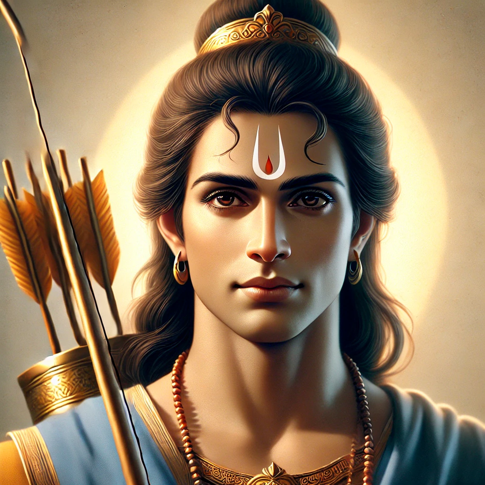
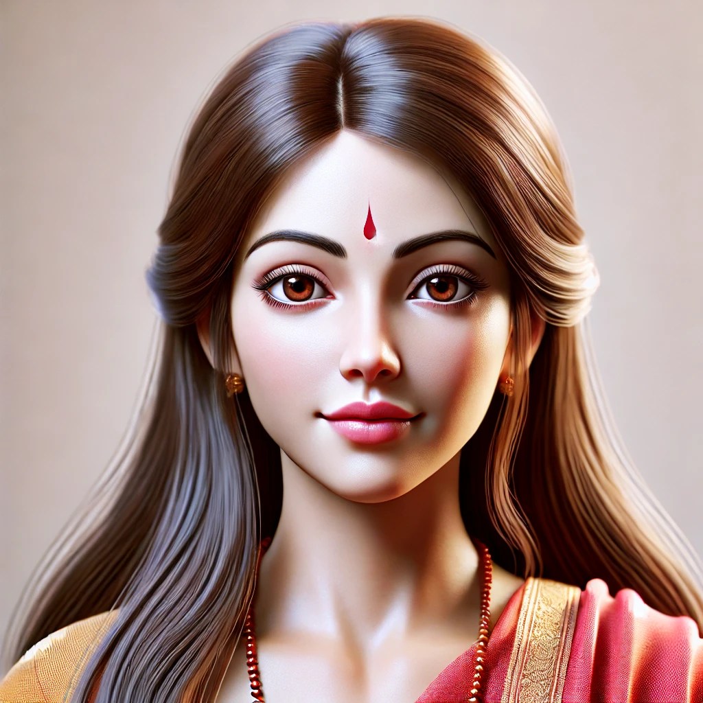
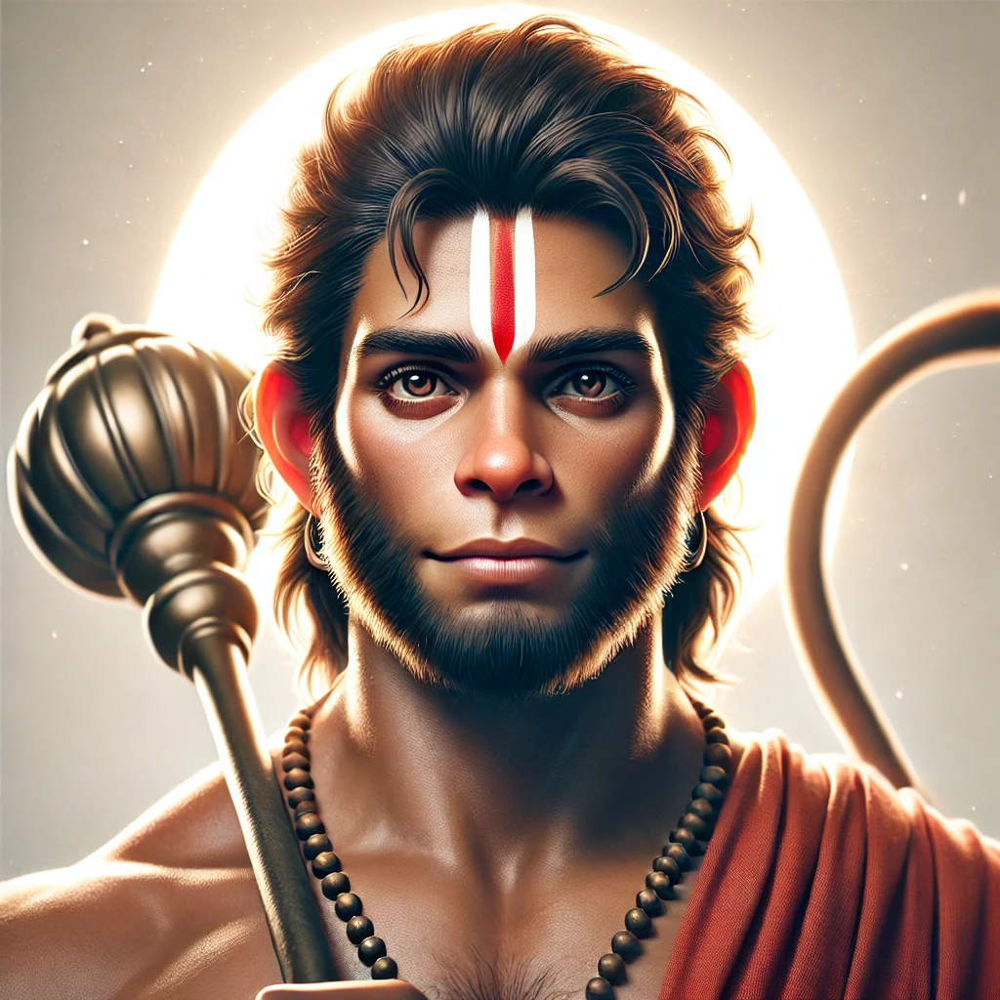
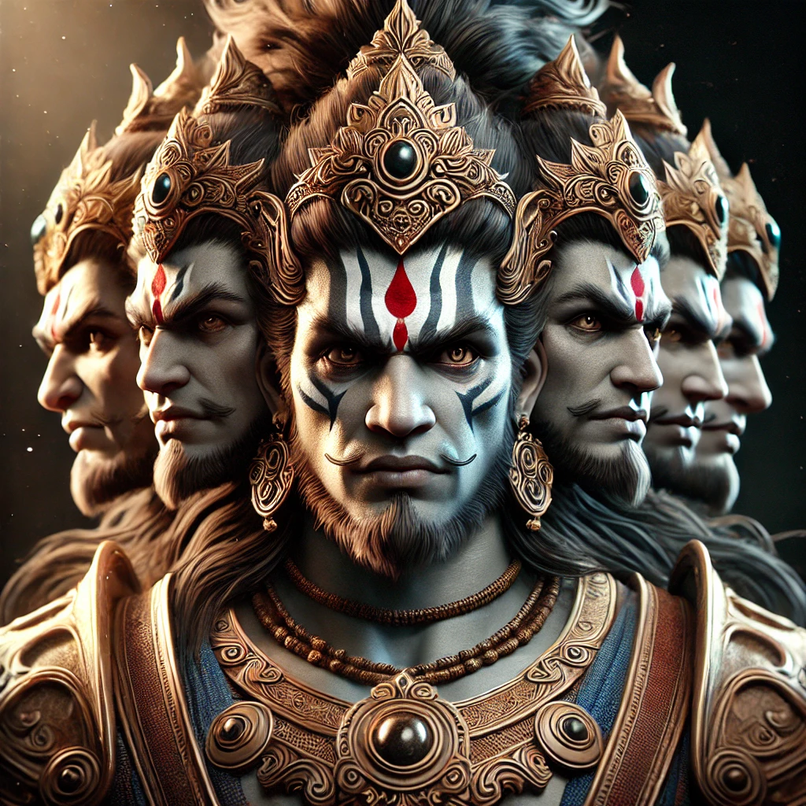

Main Characters

Lord Ram
The protagonist of the Ramayana, Ram is an avatar of Vishnu, known for his righteousness, valor, and devotion to duty.

Sita
Sita is the devoted wife of Ram and the embodiment of purity and virtue. She plays a central role in the epic's storyline.

Hanuman
Hanuman is the mighty monkey god and one of Ram’s greatest devotees, known for his strength, loyalty, and courage.

Ravan
Ravan is the antagonist of the Ramayana, the ten-headed king of Lanka, known for his great power and intellect.